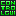
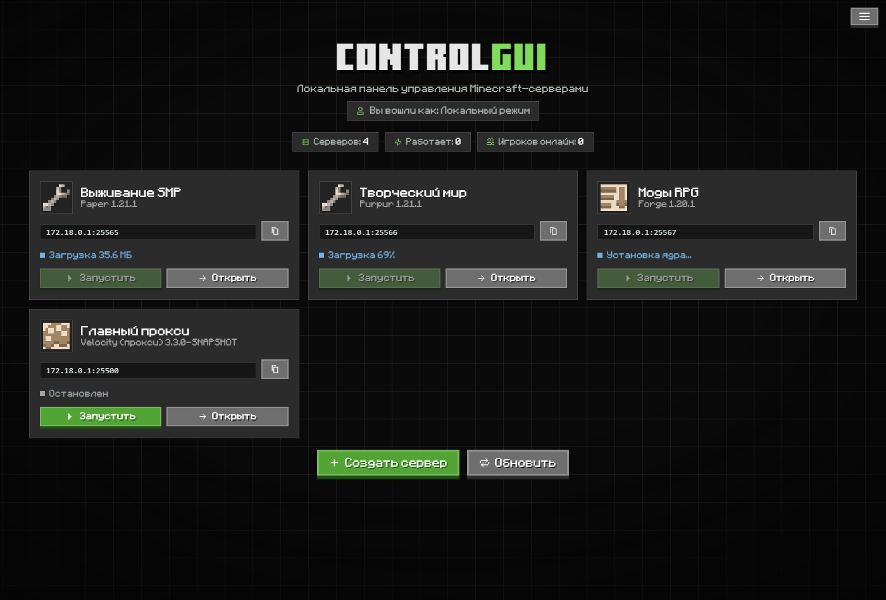
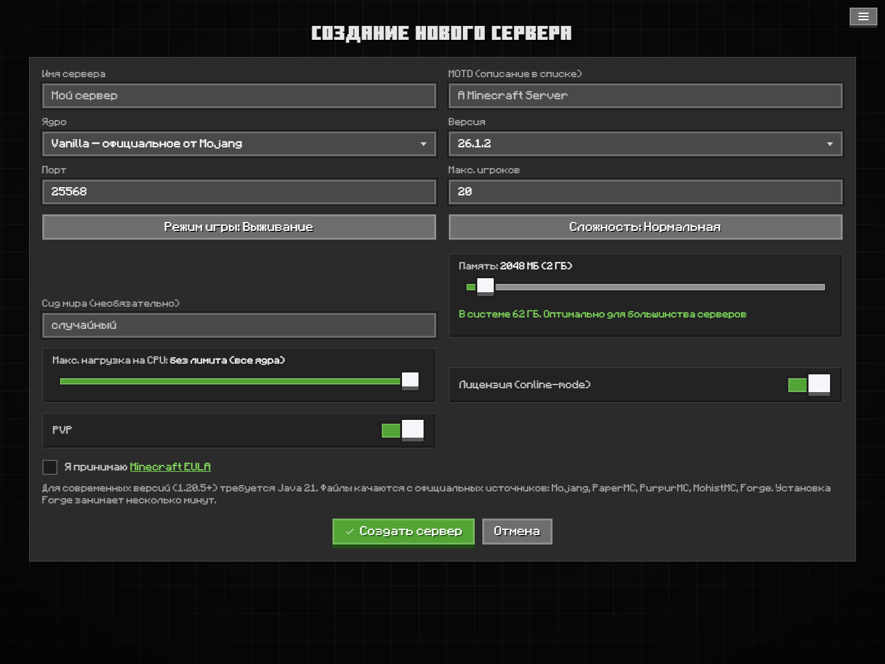

Локальная панель для создания и управления Minecraft-серверами. Paper, Forge, прокси, консоль, плагины, бэкапы — в одном окне. Без облака и подписок.
Создавайте, настраивайте и управляйте — без правки конфигов вручную
Vanilla, Paper, Purpur, Folia, Mohist, Forge — скачиваются с официальных источников. Или загрузите свой .jar.
BungeeCord и Velocity с авто-привязкой серверов «для чайников»: отметил галочками — всё настроилось само.
Вывод сервера в реальном времени, команды, отдельное окно консоли, графики CPU и памяти.
Просмотр и редактирование файлов прямо в панели, с подсветкой синтаксиса и загрузкой перетаскиванием.
Поиск и установка с Modrinth в один клик — с автоматической докачкой нужных библиотек-зависимостей.
Резервные копии сервера в один клик, восстановление и скачивание архивов.
Список игроков, инвентарь в реальном времени, модерация: кик, бан, вайтлист, операторы.
Нет нужной Java? Панель сама скачает Eclipse Temurin под выбранную версию — Windows и Linux.
Раздача ресурспака игрокам и иконка сервера — загружаются и применяются из панели.
Тёмный интерфейс в духе Minecraft Bedrock / Ore UI


Скачайте установщик (Windows) или AppImage/.deb (Linux) и запустите.
Выберите ядро и версию — панель скачает всё нужное, включая Java.
Запуск, консоль, плагины, игроки и бэкапы — прямо в окне.
Бесплатно, локально, без регистрации